A makeshift EEG lab
Say, you need to set up a makeshift EEG lab in an office? Easy-peasy—only, try to move the hardware as little as possible, especially laptops with dongles sticking out. The rest is a trail of snapshots devoid of captions, a sink, a shower room and other paraphernalia, as this is only an ancillary, temporary, extraordinary little lab, and all those staples are within reach in our mainstream lab (see Ledwidge et al., 2018; Luck, 2014).
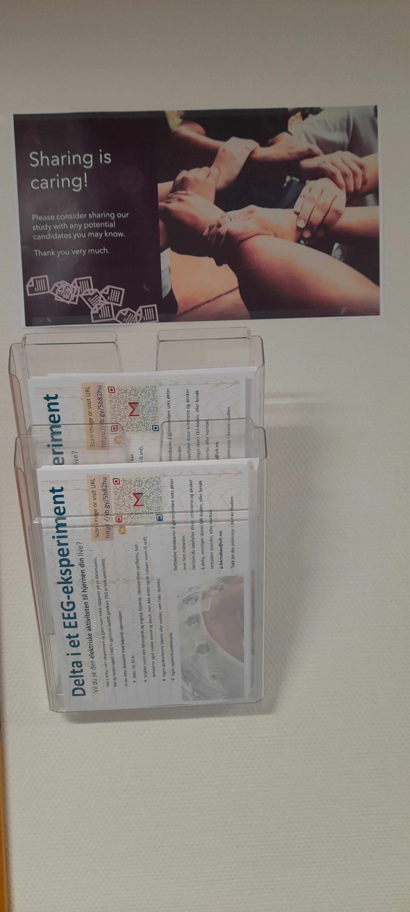
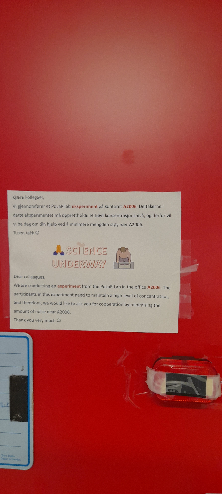
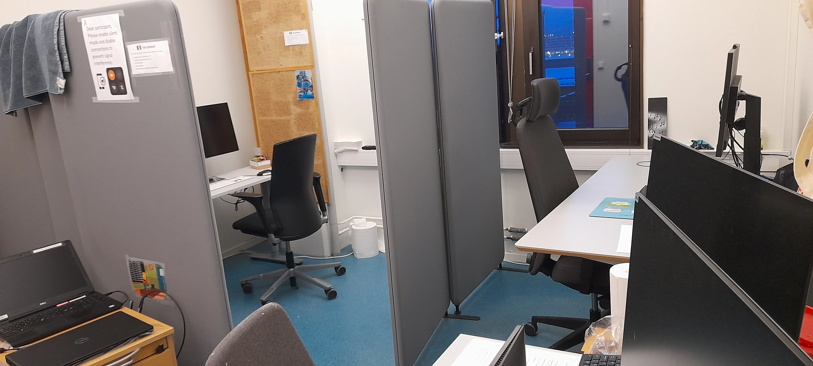
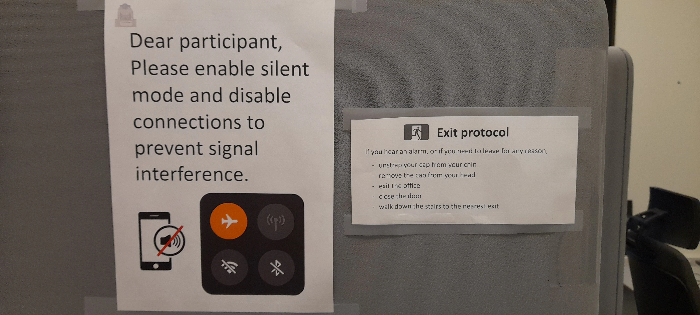
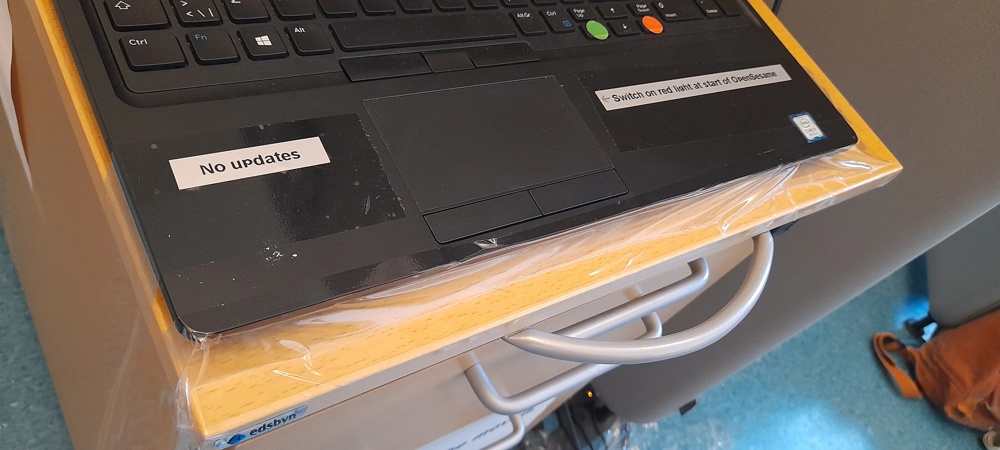
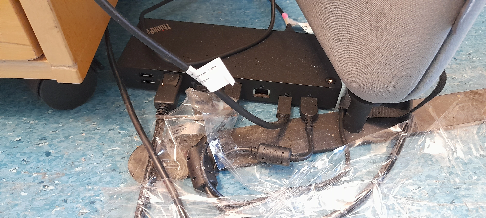
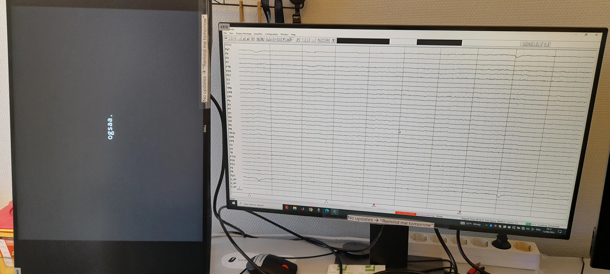
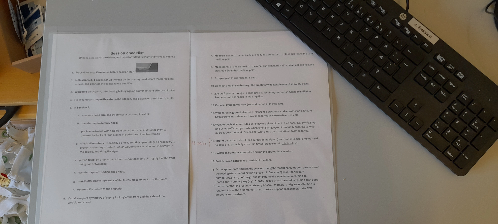
The needles below are blunt—that is, they do not pierce the skin. They’re just used to put some gel into the cap to enable the detection of electrical activity in the brain. You can explore the non-invasive, painless procedure of EEG here.
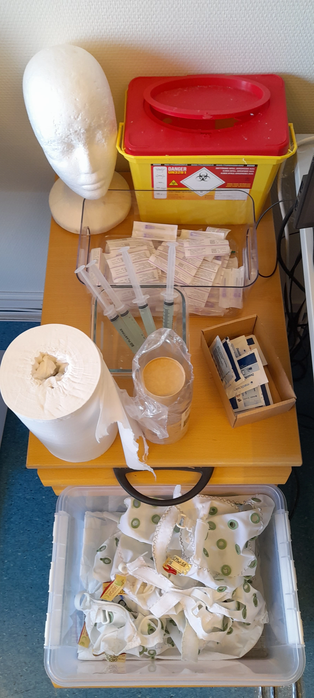
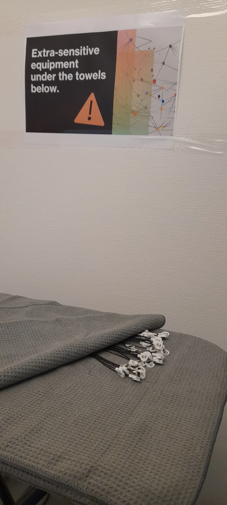
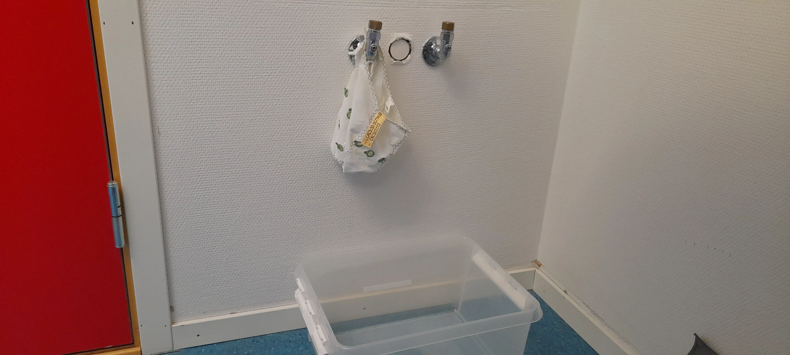
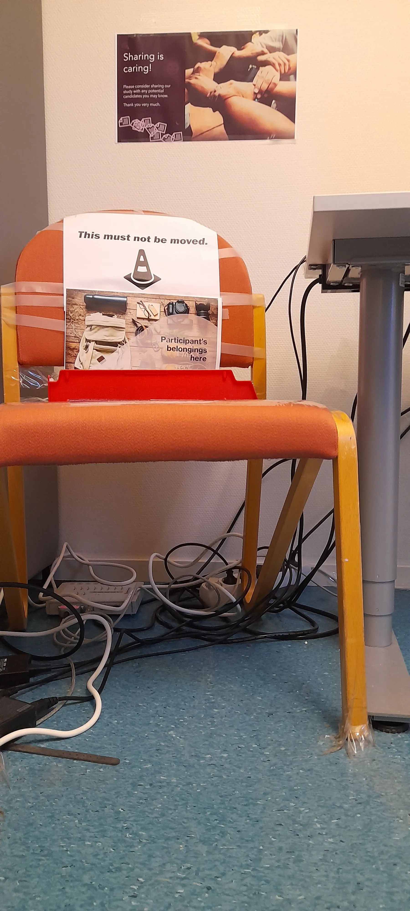
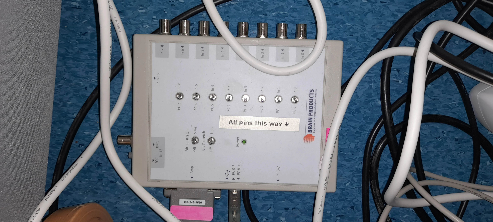
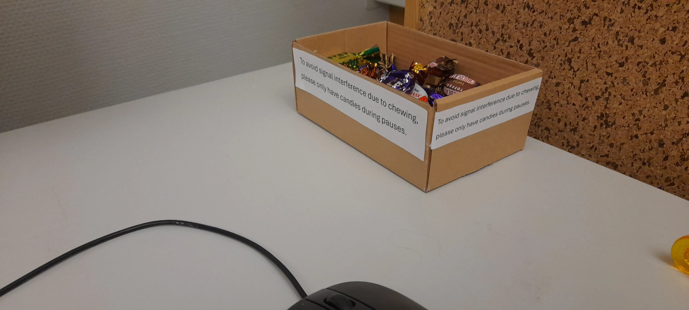
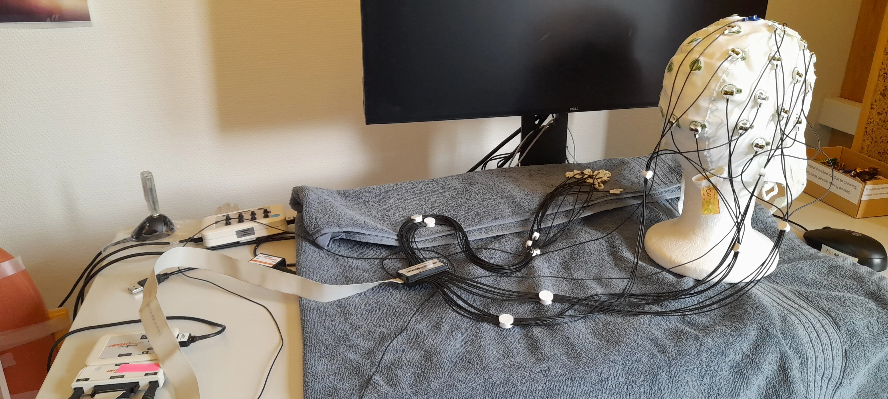
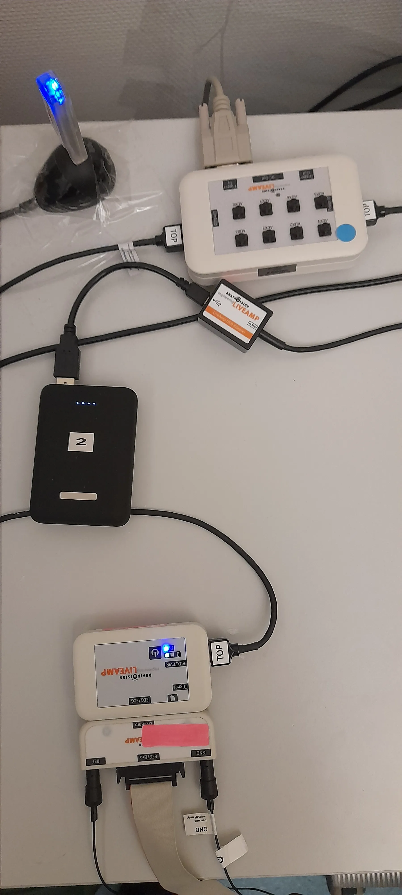
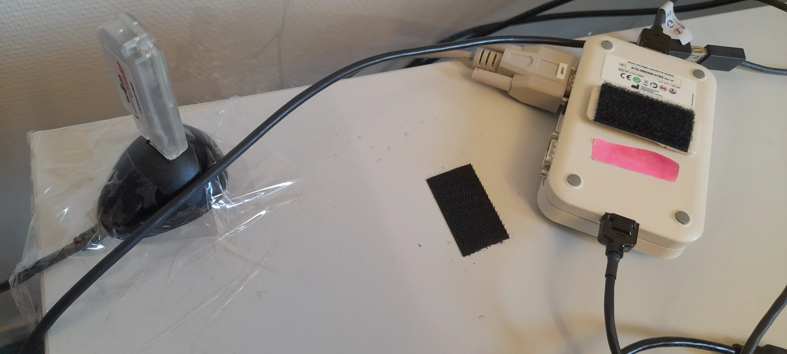
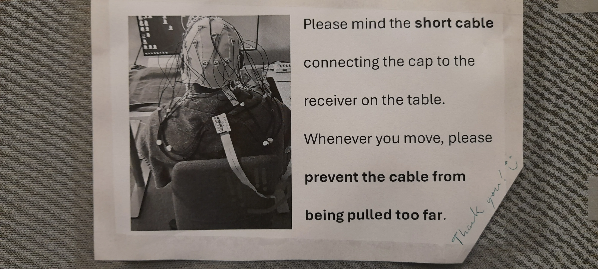
Need to return to the main lab? No problem! The tidyverse has got your back.
library(tidyr)
makeshift_lab %>%
pivot_longer(!superfluous, names_to = 'registrar', values_to = 'Mephis') %>%
filter(view == 'outside') %>%
pull(leg)
References
Ledwidge, P., Foust, J., & Ramsey, A. (2018). Recommendations for developing an EEG laboratory at a primarily undergraduate institution. Journal of Undergraduate Neuroscience Education, 17(1), A10. https://www.ncbi.nlm.nih.gov/pmc/articles/PMC6312138
Luck, S. J. (2014). Online Chapter 16: Setting up and running an ERP lab. In S. J. Luck (Ed.), An introduction to the event-related potential technique. Cambridge, MA: MIT Press. Retrieved from http://mitp-content-server.mit.edu:18180/books/content/sectbyfn?collid=books_pres_0&fn=Ch_16_0.pdf&id=8575